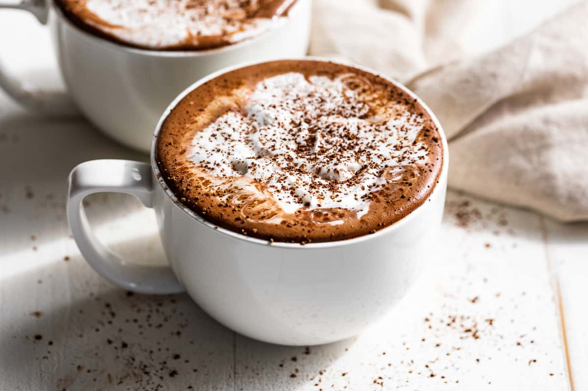

Hot Chocolate

Description
It's such a simple recipe it's almost a non-recipe. My go-to homemade hot chocolate that's way better (and healthier) than any packaged or boxed mix you'll find. Creamy, luxurious, and surprisingly healthy.
Chocolate may date as far back as the Olmecs who were the earliest known Mesoamerican civilization. But it's been grown and made into a drink since at least the 9th century. Mayans made a drink with cacao, water, cornmeal, chili peppers, and other spices. It didn't have any added sweetener so it was quite bitter. By the 16th century, Spanish explorers learned about the drink. They brought the concept to Spain and began adding sugar. By the 18th century, it was introduced in the US. And the rest is history!
Ingredients
- 1 cup unsweetened vanilla or plain almond milk
- 1 Tbsp unsweetened cocoa powder
- 1 1/2 Tbsp dairy-free semisweet chocolate (chips or bar // chopped)
- sweetener of choice (I prefer 1 Tbsp raw sugar or 1/2 packet powdered stevia per mug)
- coconut whipped cream (optional // for topping)
Instructions
- Add almond milk to a large mug and microwave for 1 minute. Alternatively, add to a saucepan over medium heat.
- Once milk is warm, add cocoa powder, chocolate and sweetener and whisk to combine.
- Put back in microwave or continue cooking on stovetop until completely combined and has reached your preferred temperature.
- Taste and adjust sweetness as needed.
- Lastly, add in your extract of choice - almond, vanilla but I think peppermint is truly unbeatable. Stir, and top with coconut whipped cream.
Cheers!